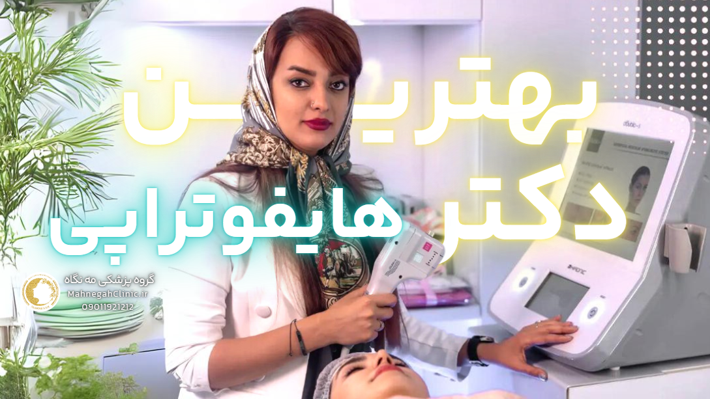
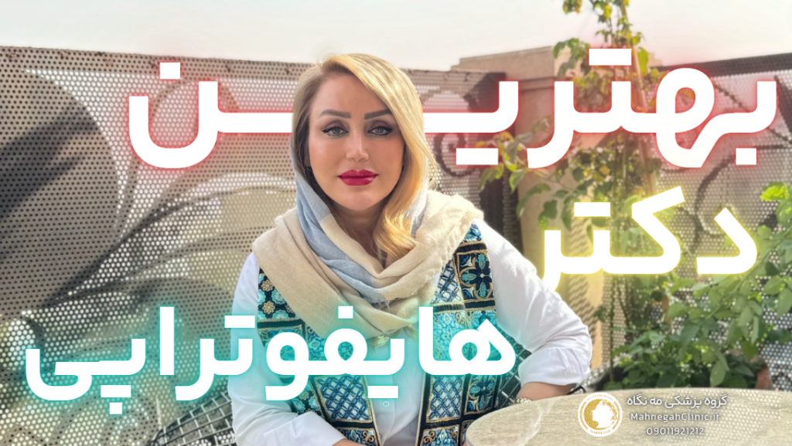

خانه / مجله / جوانسازی پوست
بهترین دکتر هایفوتراپی صورت در سعادت آباد + قیمت + تخفیف

بهترین دکتر هایفو توی سعادت آباد کیه؟
قبل از شروع همین جا بهت بگم که اگر میخای 10 درصد تخفیف روی همه حدمات هایفو بهترین دکتر هایفوتراپی صورت در سعادت آباد بگیری، اینجا کلیک کن و مشخصاتت رو وارد کن!
در دنیای امروز که زیبایی و جوانی پوست از اهمیت بالایی برخوردار است، انتخاب روشهای درمانی مناسب و موثر برای حفظ و بهبود ظاهر پوست به یک چالش تبدیل شده است.
هایفوتراپی صورت به عنوان یک روش غیرتهاجمی و ایمن، گزینهای ایدهآل برای افرادی است که به دنبال جوانسازی و لیفتینگ پوست خود بدون نیاز به جراحی هستند. در این بخش به بررسی دلایل انتخاب هایفوتراپی توسط بهترین دکتر هایفوتراپی صورت در سعادت آباد صورت میپردازیم.
جوانسازی بدون جراحی - بهترین دکتر هایفوتراپی صورت در سعادت آباد
یکی از مهمترین مزایای هایفوتراپی صورت، امکان جوانسازی پوست بدون نیاز به جراحی است. این روش با استفاده از امواج اولتراسوند، لایههای عمیق پوست را هدف قرار داده و باعث تحریک تولید کلاژن میشود. کلاژن، پروتئین اصلی ساختار پوست است که با افزایش سن کاهش مییابد و منجر به افتادگی و شل شدن پوست میشود. هایفوتراپی با تحریک تولید کلاژن، به سفت شدن و لیفتینگ پوست کمک کرده و ظاهری جوانتر و شادابتر به آن میبخشد.
بهبود ظاهر کلی پوست
هایفوتراپی صورت علاوه بر لیفتینگ و سفت کردن پوست، به بهبود ظاهر کلی پوست نیز کمک میکند. این روش میتواند در کاهش چین و چروکهای سطحی و عمیق، بهبود خطوط اخم و لبخند، کاهش منافذ باز پوست، بهبود تیرگی و لکهای پوستی و افزایش شفافیت و درخشندگی پوست موثر باشد. با انجام هایفوتراپی، پوست شما صافتر، یکدستتر و جوانتر به نظر خواهد رسید.
هایفوتراپی صورت با ارائه نتایج طبیعی و ماندگار، به شما کمک میکند تا اعتماد به نفس خود را بازیابی کرده و از زیبایی و جوانی پوست خود لذت ببرید. اگر به دنبال یک روش ایمن و موثر برای جوانسازی پوست خود هستید، هایفوتراپی را در نظر بگیرید و با یک متخصص پوست مجرب مشورت کنید.

بهترین دکتر هایفوتراپی صورت در سعادت آباد کیست؟
درحال حاضر خانم دکتر فریده محمدی در گروه پزشکی مه نگاه، بهترین دکتر هایفو در محدوده سعادت آباد هستند.
انتخاب بهترین دکتر هایفوتراپی صورت در سعادت آباد یک تصمیم حیاتی است که میتواند تأثیر بسزایی در نتایج درمان و رضایت شما داشته باشد. در این بخش به بررسی ویژگیهای یک دکتر هایفوتراپی خوب و معیارهای انتخاب بهترین دکتر میپردازیم.
ویژگیهای یک دکتر هایفوتراپی خوب
یک دکتر هایفوتراپی خوب باید دارای ویژگیهای زیر باشد:
- تخصص و تجربه: دکتر باید دارای تخصص و تجربه کافی در زمینه هایفوتراپی باشد و با جدیدترین تکنیکها و دستگاههای هایفو آشنا باشد.
- مهارت و دقت: انجام هایفوتراپی نیازمند دقت و مهارت بالایی است. دکتر باید بتواند با دقت و ظرافت، امواج اولتراسوند را به لایههای مناسب پوست هدایت کند.
- مشاوره و راهنمایی: دکتر باید قبل از انجام هایفوتراپی، مشاوره کاملی به شما ارائه دهد و شما را در مورد مزایا، معایب، و انتظارات واقعبینانه از درمان آگاه کند.
- استفاده از دستگاههای باکیفیت: دکتر باید از دستگاههای هایفو باکیفیت و استاندارد استفاده کند تا نتایج بهینه و ایمن را برای شما تضمین کند.
- رضایت بیماران قبلی: بررسی نظرات و تجربیات بیماران قبلی میتواند به شما در انتخاب بهترین دکتر کمک کند.
معیارهای انتخاب بهترین دکتر هایفوتراپی صورت در سعادت آباد
برای انتخاب بهترین دکتر هایفوتراپی صورت در سعادت آباد، میتوانید معیارهای زیر را در نظر بگیرید:
- تحقیق و بررسی: در مورد دکتران مختلف تحقیق کنید و سوابق، مدارک تحصیلی، و تجربیات آنها را بررسی کنید.
- مشاوره حضوری: با چند دکتر مختلف مشاوره حضوری داشته باشید و سوالات خود را بپرسید.
- مشاهده نمونه کارها: از دکتر بخواهید نمونه کارهای هایفوتراپی خود را به شما نشان دهد.
- توجه به هزینه: هزینه هایفوتراپی میتواند متفاوت باشد. با مقایسه هزینهها در کلینیکهای مختلف، بهترین گزینه را انتخاب کنید.
- احساس راحتی و اعتماد: در نهایت، مهمترین معیار انتخاب دکتر، احساس راحتی و اعتماد شما به او است.
با در نظر گرفتن این معیارها، میتوانید بهترین دکتر هایفوتراپی صورت در سعادت آباد را پیدا کنید و از نتایج درمانی خود رضایت کامل داشته باشید.
چگونه بهترین دکتر هایفوتراپی صورت در سعادت آباد را پیدا کنیم؟
یافتن بهترین دکتر هایفوتراپی صورت در سعادت آباد نیازمند تحقیق و بررسی دقیق است. در این بخش به روشهای موثر برای پیدا کردن دکتر مناسب میپردازیم.
تحقیق و بررسی آنلاین
اینترنت یک منبع ارزشمند برای یافتن دکتر هایفوتراپی است. میتوانید با جستجوی عباراتی مانند "بهترین دکتر هایفوتراپی در سعادت آباد" یا "دکتر هایفوتراپی متخصص در سعادت آباد" در موتورهای جستجو، لیستی از دکتران و کلینیکهای مربوطه را پیدا کنید.
سپس میتوانید وبسایتها و صفحات اجتماعی آنها را بررسی کنید و اطلاعات بیشتری در مورد تخصص، تجربه، و خدمات آنها کسب کنید. همچنین، میتوانید نظرات و تجربیات بیماران قبلی را در سایتها و انجمنهای آنلاین بخوانید.
مشورت با متخصصان زیبایی
اگر با متخصصان زیبایی دیگری در ارتباط هستید، میتوانید از آنها در مورد بهترین دکتر هایفوتراپی صورت در سعادت آباد سوال کنید. آنها ممکن است دکترانی را بشناسند که تجربه خوبی با آنها داشتهاند و میتوانند شما را به آنها معرفی کنند.
همچنین، میتوانید از دوستان و آشنایان خود که تجربه هایفوتراپی داشتهاند، در مورد دکترشان سوال کنید و نظرات آنها را جویا شوید.
ضمنا در میتوانید موارد اخیر هایفوتراپی توسط پزشکان مجموعه را مشاهده کنید
علاوه بر این روشها، میتوانید از طریق تماس با کلینیکهای زیبایی در سعادت آباد و پرسیدن سوالات خود در مورد دکتران هایفوتراپی، اطلاعات بیشتری کسب کنید. همچنین، میتوانید در صورت امکان، از کلینیکها بازدید کنید و با دکتران حضوری صحبت کنید.
با انجام تحقیقات کافی و بررسی دقیق، میتوانید بهترین دکتر هایفوتراپی صورت در سعادت آباد را پیدا کنید و از نتایج درمانی خود اطمینان حاصل کنید. به یاد داشته باشید که انتخاب دکتر مناسب، تأثیر بسزایی در موفقیت درمان و رضایت شما خواهد داشت.
سوالات متداول درباره هایفوتراپی صورت
هایفوتراپی صورت یک روش درمانی محبوب برای جوانسازی پوست است، اما ممکن است سوالات زیادی در ذهن شما ایجاد کند. در این بخش به برخی از سوالات متداول درباره هایفوتراپی پاسخ میدهیم.
آیا هایفوتراپی درد دارد؟
اکثر افراد در طول هایفوتراپی احساس درد خفیف یا ناراحتی میکنند. این احساس ممکن است شبیه به سوزن سوزن شدن یا گرما باشد. با این حال، آستانه درد افراد متفاوت است و برخی ممکن است احساس درد بیشتری داشته باشند. در صورت نیاز، پزشک میتواند از کرم بیحسی موضعی برای کاهش درد استفاده کند.
عوارض جانبی هایفوتراپی چیست؟
هایفوتراپی به طور کلی یک روش ایمن است، اما ممکن است برخی عوارض جانبی خفیف و موقت ایجاد کند. این عوارض ممکن است شامل قرمزی، تورم، کبودی، یا حساسیت در ناحیه درمان باشد. این عوارض معمولاً ظرف چند ساعت یا چند روز برطرف میشوند. در موارد نادر، ممکن است عوارض جدیتری مانند سوختگی یا آسیب عصبی رخ دهد، اما این موارد بسیار نادر هستند و با انتخاب یک پزشک متخصص و باتجربه میتوان از آنها جلوگیری کرد.
علاوه بر این سوالات، ممکن است سوالات دیگری نیز در ذهن شما باشد، مانند:
- چه مدت طول میکشد تا نتایج هایفوتراپی قابل مشاهده باشد؟
- چند جلسه هایفوتراپی نیاز است؟
- آیا هایفوتراپی برای همه مناسب است؟
برای دریافت پاسخ به این سوالات و سایر سوالات خود، میتوانید با یک دکتر هایفوتراپی متخصص مشورت کنید. آنها میتوانند به شما اطلاعات کامل و دقیقی در مورد هایفوتراپی و مناسب بودن آن برای شما ارائه دهند.

هزینه هایفوتراپی صورت در سعادت آباد
هزینه هایفو صورت یکی از مهمترین عواملی است که افراد در تصمیمگیری برای انجام این روش درمانی در نظر میگیرند. قیمت هایفوتراپی در سعادت آباد میتواند متغیر باشد و به عوامل مختلفی بستگی دارد.
در این بخش به بررسی این عوامل و مقایسه هزینهها در کلینیکهای مختلف میپردازیم.
دریافت 10 درصد تخفیف ویژه هایفوتراپی صورت (کلیک کنید)
عوامل موثر بر هزینه - بهترین دکتر هایفوتراپی صورت در سعادت آباد
- ناحیه تحت درمان: هزینه هایفوتراپی به ناحیه تحت درمان بستگی دارد. به عنوان مثال، هایفوتراپی صورت کامل معمولاً هزینه بیشتری نسبت به هایفوتراپی یک ناحیه خاص مانند پیشانی یا گردن دارد.
- تعداد جلسات درمانی: تعداد جلسات مورد نیاز برای دستیابی به نتایج مطلوب نیز بر هزینه کلی هایفوتراپی تأثیر میگذارد. برخی افراد ممکن است تنها به یک جلسه نیاز داشته باشند، در حالی که برخی دیگر ممکن است نیاز به چندین جلسه داشته باشند.
- نوع دستگاه هایفو: دستگاههای هایفو مختلفی در بازار وجود دارد که از نظر کیفیت و تکنولوژی متفاوت هستند. استفاده از دستگاههای پیشرفتهتر ممکن است هزینه بیشتری داشته باشد.
- تجربه و تخصص پزشک: هزینه هایفوتراپی ممکن است بسته به تجربه و تخصص پزشک متفاوت باشد. پزشکان با تجربه و متخصص ممکن است هزینه بیشتری برای خدمات خود دریافت کنند.
- موقعیت کلینیک: موقعیت کلینیک نیز میتواند بر هزینه هایفوتراپی تأثیر بگذارد. کلینیکهای واقع در مناطق پر رفت و آمد و با امکانات بیشتر ممکن است هزینه بیشتری داشته باشند.
مقایسه هزینهها در کلینیکهای مختلف
برای مقایسه هزینه هایفوتراپی صورت در سعادت آباد، میتوانید با کلینیکهای مختلف تماس بگیرید و قیمتها را استعلام کنید. همچنین، میتوانید وبسایتها و صفحات اجتماعی کلینیکها را بررسی کنید و اطلاعات مربوط به هزینهها را بیابید. در هنگام مقایسه هزینهها، به خاطر داشته باشید که کیفیت خدمات و تخصص پزشک نیز از اهمیت بالایی برخوردار است. بنابراین، تنها به قیمت توجه نکنید و سایر عوامل را نیز در نظر بگیرید.
در نهایت، برای تصمیمگیری در مورد هزینه هایفوتراپی، بهتر است با یک دکتر هایفوتراپی متخصص مشورت کنید. آنها میتوانند شما را در مورد هزینههای مربوط به درمان خود و گزینههای مالی موجود راهنمایی کنند.

مراقبتهای پس از هایفوتراپی صورت
پس از انجام هایفوتراپی صورت، رعایت مراقبتهای مناسب برای بهبود سریعتر و دستیابی به نتایج بهینه بسیار مهم است. در این بخش به نکات مهم برای مراقبتهای پس از هایفوتراپی و محصولات مراقبتی توصیه شده میپردازیم.
نکات مهم برای بهبود سریعتر
- استفاده از کمپرس سرد: در چند روز اول پس از هایفوتراپی، میتوانید از کمپرس سرد برای کاهش تورم و قرمزی استفاده کنید.
- اجتناب از نور خورشید: در هفتههای اول پس از درمان، از قرار گرفتن مستقیم در معرض نور خورشید خودداری کنید و حتماً از کرم ضد آفتاب با SPF بالا استفاده کنید.
- پرهیز از فعالیتهای سنگین: در چند روز اول پس از هایفوتراپی، از انجام فعالیتهای سنگین و ورزشهای شدید خودداری کنید.
- نوشیدن آب فراوان: نوشیدن آب فراوان به هیدراته ماندن پوست و بهبود سریعتر آن کمک میکند.
- رعایت بهداشت پوست: پوست خود را به آرامی و با استفاده از شویندههای ملایم تمیز کنید.
- استفاده از محصولات مراقبتی مناسب: از محصولات مراقبتی توصیه شده توسط پزشک خود استفاده کنید.
محصولات مراقبتی توصیه شده
- کرم ضد آفتاب: استفاده روزانه از کرم ضد آفتاب با SPF بالا برای محافظت از پوست در برابر اشعههای مضر خورشید ضروری است.
- مرطوب کننده: استفاده از مرطوب کننده مناسب به حفظ رطوبت پوست و جلوگیری از خشکی آن کمک میکند.
- سرمهای حاوی ویتامین C و E: این سرمها به تولید کلاژن کمک کرده و خاصیت آنتیاکسیدانی دارند که میتواند به بهبود ظاهر پوست کمک کند.
- محصولات حاوی هیالورونیک اسید: هیالورونیک اسید به حفظ رطوبت پوست کمک کرده و میتواند به کاهش چین و چروک کمک کند.
با رعایت این نکات و استفاده از محصولات مراقبتی مناسب، میتوانید بهبودی سریعتر و نتایج بهتری از هایفوتراپی صورت خود داشته باشید. در صورت بروز هرگونه عارضه یا سوال، حتماً با پزشک خود مشورت کنید.

H2 8: نتیجهگیری: انتخاب بهترین دکتر هایفوتراپی صورت در سعادت آباد
در دنیای امروز که زیبایی و جوانی پوست از اهمیت بالایی برخوردار است، انتخاب بهترین دکتر هایفوتراپی صورت در سعادت آباد میتواند تأثیر بسزایی در نتایج درمان و رضایت شما داشته باشد. در این مقاله به بررسی جوانب مختلف هایفوتراپی، از جمله مزایا، هزینهها، و مراقبتهای پس از درمان پرداختیم. همچنین، راهکارهایی برای یافتن بهترین دکتر هایفوتراپی در سعادت آباد ارائه دادیم.
H3 8.1: اهمیت انتخاب دکتر متخصص و باتجربه
انتخاب یک دکتر هایفوتراپی متخصص و باتجربه از اهمیت بالایی برخوردار است. یک دکتر متخصص میتواند با ارزیابی دقیق شرایط پوست شما، بهترین روش درمانی را برای شما انتخاب کند و با استفاده از دستگاههای باکیفیت و تکنیکهای پیشرفته، نتایج بهینه و ایمن را برای شما تضمین کند. همچنین، یک دکتر متخصص میتواند شما را در مورد مراقبتهای پس از درمان راهنمایی کند و به سوالات شما پاسخ دهد.
H3 8.2: کلینیک زیبایی مه نگاه: انتخابی مطمئن برای هایفوتراپی
کلینیک زیبایی مه نگاه با بهرهگیری از کادر پزشکی متخصص و باتجربه، دستگاههای پیشرفته هایفو، و محیطی آرام و دلنشین، آماده ارائه خدمات هایفوتراپی با کیفیت بالا به شما عزیزان است.
در کلینیک مه نگاه، ما به نیازها و انتظارات شما توجه میکنیم و با ارائه مشاورههای تخصصی، بهترین روش درمانی را برای شما انتخاب میکنیم. همچنین، ما با ارائه مراقبتهای پس از درمان، به شما کمک میکنیم تا نتایج درمانی خود را حفظ کرده و از زیبایی و جوانی پوست خود لذت ببرید.
اگر به دنبال بهترین دکتر هایفوتراپی صورت در سعادت آباد هستید، کلینیک زیبایی مه نگاه را در نظر بگیرید. ما با ارائه خدمات با کیفیت و قیمت مناسب، به شما کمک میکنیم تا به زیبایی و جوانی دلخواه خود دست یابید. برای کسب اطلاعات بیشتر و رزرو نوبت، با ما تماس بگیرید.
سوالات متداول هایفو صورت
یک روش غیرتهاجمی برای لیفتینگ و جوانسازی پوست با استفاده از امواج اولتراسوند.
لیفتینگ و سفت کردن پوست، کاهش چین و چروک، بهبود بافت پوست، بدون نیاز به جراحی و نتایج طولانی مدت
اکثر افراد درد خفیف یا ناراحتی را تجربه میکنند، اما آستانه درد متفاوت است.
عوارض جانبی معمولاً خفیف و موقت هستند، مانند قرمزی، تورم، یا کبودی.
تحقیق آنلاین، مشورت با متخصصان زیبایی، و مقایسه هزینهها و تخصص پزشکان.